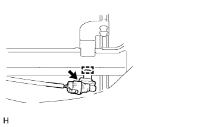

AMBIENT TEMPERATURE SENSOR > REMOVAL |
| 1. REMOVE UPPER RADIATOR SUPPORT SEAL |
 |
Remove the 13 clips and upper radiator support seal.
| 2. REMOVE RADIATOR GRILLE |
Remove the radiator grille (Click here).
| 3. REMOVE COOLER THERMISTOR (AMBIENT TEMPERATURE SENSOR) |
|  |
Disconnect the connector.
Using a screwdriver, detach the clamp and remove the sensor.